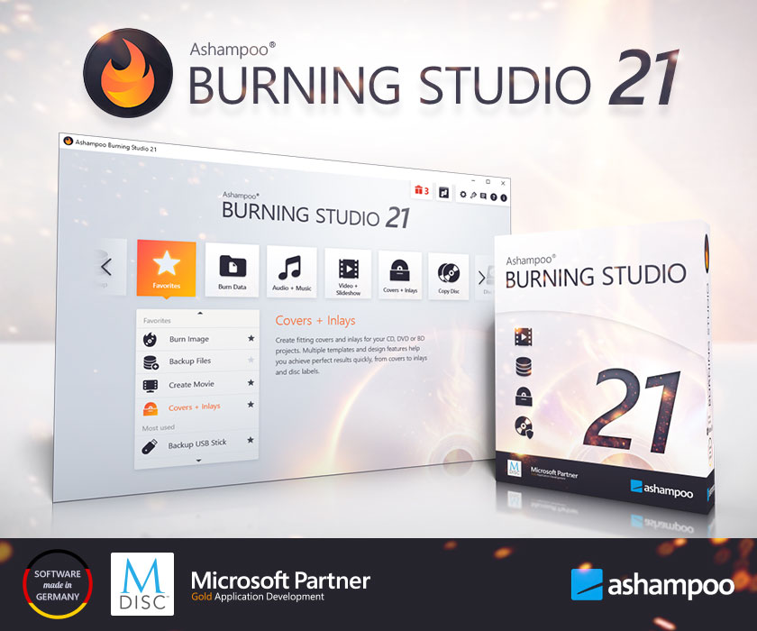
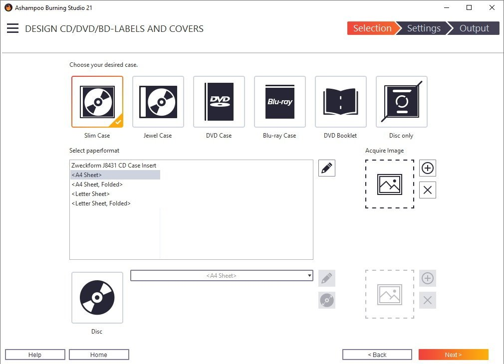
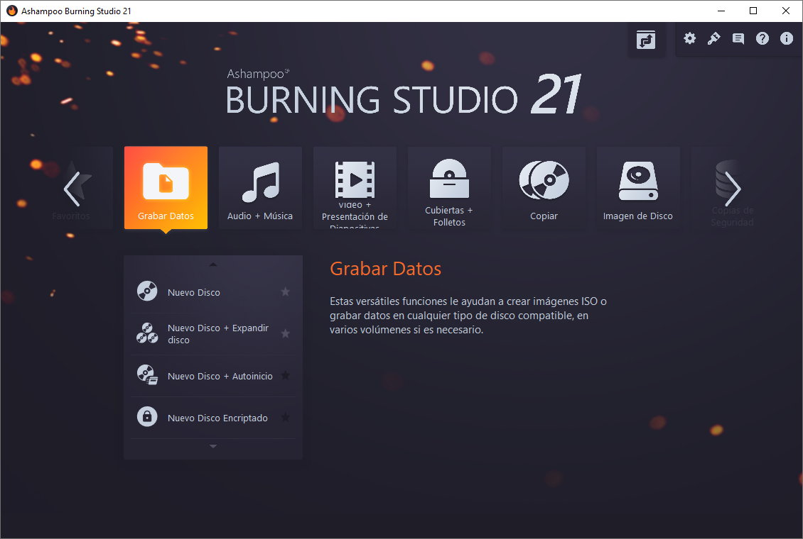
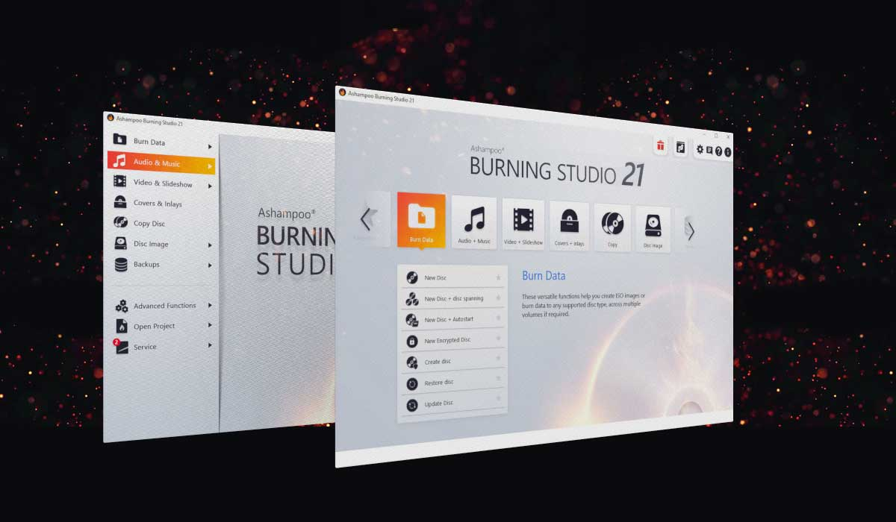
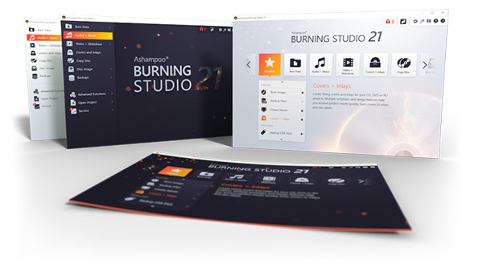
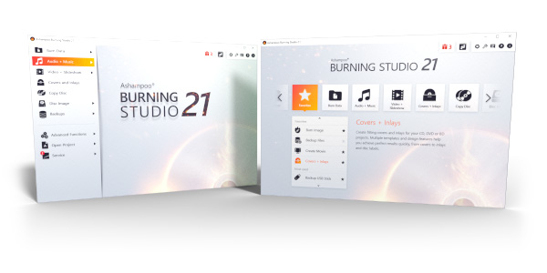
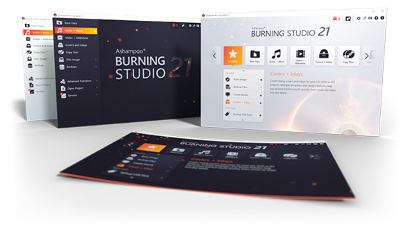
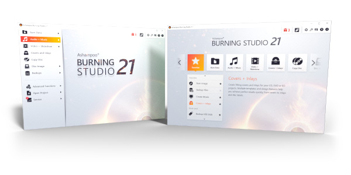

- Descripción
- Características
- Cambios recientes
- Capture
Ashampoo Burning Studio 24 Full Crack
Ashampoo Burning Studio Full es una de las mejores soluciones de software completa y fiable que es imprescindible tener cuando se necesite grabar todos tus archivos personales en discos Blu-ray, realizar copias de seguridad y proteger datos confidenciales con cifrado de archivos todo esto y mucho mas se puede hacer con este gran programa en su última versión 2023 gratis.
Ashampoo Burning Studio crack conserva todas las ventajas de su predecesor y añade características nuevas como lo es: copia de seguridad de archivos de varios discos, un ripeador de CD de audio integrado y soporte mejorado para el nuevo y excitante formato Blu-Ray con capacidades de hasta 25 gigabytes por cada capa.
Ashampoo Burning Studio Licencia es una gran herramienta completa para todas las tareas que se necesiten hacer sobre grabación de CD, DVD y Blu-ray. El principal objetivo de esta versión premium, más rápida y potente, es mejorar aún más las capacidades de creación para crear discos de vídeo y audio utilizando los formatos más recientes. El vídeo HD y Full HD es ahora totalmente compatible con los discos Blu-ray, y toda la codificación está a cargo de Ashampoo Burning Studio.
Ashampoo Burning Studio full crack El nuevo editor integrado crea discos de vídeo DVD y Blu-ray con menús generados automáticamente o diseñados por el usuario. Cada página del menú puede usar un tema y música de fondo diferentes.
Ashampoo Burning Studio Patch El nuevo Editor de reproducción automática le permitira al usuario crear discos de datos con menús interactivos muy faciles de crear de varias páginas que se inician automáticamente. Los menús, por ejemplo, incluyen enlaces a archivos o páginas web. También es posible crear discos de arranque automático sin menús. Los archivos de audio y los CDs de audio se reproducen directamente desde Ashampoo Burning Studio 24 Full.
Ashampoo Burning Studio Activacion Esto es muy útil cuando se construyen discos de audio, para poder comprobar rápidamente las pistas sin cambiar de programa. El reproductor de audio tiene una pantalla gráfica con todos los controles estándar del reproductor
El nuevo Ashampoo Burning Studio 24 Full Crack es la forma más cómoda de grabar sus datos de forma segura, copiar discos CD, DVD y Blu-ray sin esfuerzo y le da acceso a una serie de funciones multimedia de primer nivel. Cree sus propias películas y presentaciones, modifique los discos existentes o cree discos de vídeo con menús animados. Extrae el audio de los CD de música, haz copias de seguridad de tus archivos al instante y, de paso, crea carátulas perfectas para tus proyectos. Grabe datos importantes en cualquier disco con una potente compresión y protección por contraseña y diga adiós a la pérdida de datos. ¡Prepárate para un nuevo Ashampoo Burning Studio 24 full español mega!
Las ventajas de un vistazo
- Graba, copia y realiza copias de seguridad con una facilidad de uso inigualable.
- Crea, corta y graba películas de alta calidad.
- Tus recuerdos fotográficos como magníficos pases de diapositivas.
- Crea y graba discos de audio con carátulas.
- Moderno decodificador H.265 para una calidad de vídeo impresionante.
- Planes de copia de seguridad inteligentes para realizar copias de seguridad de datos fiables.
- Pistas perfectamente organizadas en el mejor formato para la radio de tu coche.
Características de Ashampoo Burning Studio 24 full descarga
- Preparado para H.265-HEVC
- Los códecs son el alma de los proyectos multimedia, y Ashampoo Burning Studio Serial Español incluye una nueva estrella: H.265 (también llamado HEVC). Este códec ofrece la misma calidad pero con una tasa de compresión de datos un 50% superior a la de su predecesor. Aprovecha las ventajas de los codificadores modernos y procesa tu material H.265, por ejemplo, grabado con una cámara digital, un teléfono móvil o una cámara de acción, sin esfuerzo.
- Preparado para H.265-HEVC
- Los códecs son el alma de los proyectos multimedia, y Ashampoo Burning Studio Full MEGA incluye una nueva estrella: H.265 (también llamado HEVC). Este códec ofrece la misma calidad pero con una tasa de compresión de datos un 50% superior a la de su predecesor. Aprovecha las ventajas de los codificadores modernos y procesa tus secuencias H.265, por ejemplo, grabadas con una cámara digital, un teléfono móvil o una cámara de acción, sin esfuerzo.
- Acceso a las funciones a la velocidad del rayo
- Burning Studio ha ganado muchos fans gracias a su clara estructura de menús y a sus opciones de acceso rápido. Pero las cosas pueden ir aún más rápido: Escoge tu módulo favorito y crea un acceso directo en el escritorio para acceder al instante. Todos los módulos son compatibles. Navega hasta donde necesites en cuestión de segundos, ¡y con un solo clic!
- Ripea música más cómodamente con carátulas, metadatos y mucho más
- Copiar discos siempre ha sido súper cómodo y fácil con Burning Studio. El programa reconoce automáticamente el contenido de los CD y recupera automáticamente los metadatos y las carátulas adecuadas para ti. En Ashampoo Burning Studio gratis se ha revisado por completo esta tecnología para mejorar la velocidad y las coincidencias exactas, desde carátulas hasta artistas, nombres de títulos y mucho más. Es la función de copia más rápida y cómoda de todos los Burning Studio.
- Mantenimiento del producto que importa
- La tecnología de la información está sujeta a cambios constantes, incluidos los sistemas operativos, los formatos de archivo y el hardware. Por este motivo, hemos actualizado y revisado los fundamentos de ashampoo burning studio full español mega. Los procedimientos de grabación y conversión han sido meticulosamente examinados, revisados y ajustados hasta la perfección. También se han añadido más de 200 perfiles de autorradio y múltiples mejoras multimedia. Y no hay que olvidar el aspecto visual: Este es el Burning Studio con mejor aspecto hasta la fecha.
- Crea tus propias películas y presentaciones con facilidad
- Con Burning Studio 24, no hay límite para lo que puedes hacer. Corta tus películas y añade intros y outros con sólo unos clics. Los vídeos desalineados se pueden girar al instante. Los subtítulos te ayudan a transmitir tu mensaje y los temas ya preparados o los gráficos personalizados aportan el tan ansiado pulido. Sorprenda a sus amigos y familiares con impresionantes presentaciones de diapositivas con música de fondo y convierta sus preciosos recuerdos en una obra maestra visual. El nuevo descodificador H.265 proporciona una flexibilidad aún mayor a la hora de crear proyectos de alta calidad. Celebración familiar, evento laboral o vacaciones, con este programa de grabación, ¡los resultados brillantes están garantizados!
- El mejor plan para realizar copias de seguridad seguras
- ¿Guarda sus archivos en la nube? ¿Por qué no guardar tus archivos en casa y grabarlos en CD, DVD o Blu-ray? Los prácticos planes de copia de seguridad de Burning Studio 24 hacen el trabajo pesado por ti. Es muy fácil hacer una copia de seguridad de los datos importantes a nivel local y el programa puede incluso recordarte cuándo debe hacerse la siguiente copia de seguridad. La gestión de las copias de seguridad es igualmente sencilla con la recuperación de archivos y las actualizaciones con un solo clic. No podría ser más fácil. Y no te preocupes si tus archivos no caben en un solo disco. Nuestra tecnología de expansión de discos se encarga de ello y distribuye automáticamente tus archivos en varios volúmenes, además de comprimirlos y protegerlos con contraseña para mayor seguridad.
- El sonido para tu música y audiolibros en el coche
- A la hora de grabar discos para la radio del coche, es fundamental elegir el formato adecuado o perderás el orden de las canciones o acabarás con un disco que no se puede reproducir. El nuevo Burning Studio pone fin a esta pesadilla. Con más de 1.800 preselecciones y perfiles para todas las radios de coche habituales, tus discos funcionarán como esperas en cualquier dispositivo. El programa también admite emuladores de reproductores de CD multidisco y funciones de ecualización y normalización. Ya sea una canción o un audiolibro, Burning Studio ofrece la mejor experiencia de escucha de tus pistas sobre la marcha, ¡y en el orden correcto!
- La forma más sencilla de extraer CDs y grabar archivos de audio
- ¿Necesitas extraer audio de tus CD de música? La inteligente función de ripeo de discos de Ashampoo® Burning Studio extrae el audio de los discos de música en cuestión de minutos. El artista y el género se reconocen automáticamente, no es necesario introducirlos manualmente. Convierta los CD de audio en archivos de audio de alta calidad con nombres de archivo significativos y seleccione entre una variedad de formatos diferentes. Naturalmente, luego puedes convertir tus archivos en discos de música, junto con ajustes de ecualización y volumen para una experiencia de sonido aún mejor, y añadir tus propios diseños de portada. ¿Suena bien? ¡Lo es!
y más…
- ¿Necesitas extraer audio de tus CD de música? La inteligente función de ripeo de discos de Ashampoo® Burning Studio extrae el audio de los discos de música en cuestión de minutos. El artista y el género se reconocen automáticamente, no es necesario introducirlos manualmente. Convierta los CD de audio en archivos de audio de alta calidad con nombres de archivo significativos y seleccione entre una variedad de formatos diferentes. Naturalmente, luego puedes convertir tus archivos en discos de música, junto con ajustes de ecualización y volumen para una experiencia de sonido aún mejor, y añadir tus propios diseños de portada. ¿Suena bien? ¡Lo es!
- Cree discos CD/DVD/Blu-ray con menús de reproducción automática y capacidad de inicio automático
- Crear Video CD (VCD), Super Video CD (VCD), video DVD, video Blu-ray
- Grabe datos en CD, DVD o discos Blu-ray.
- Actualizar los discos existentes y añadir/quitar archivos y carpetas
- Borrar discos CD/DVD/Blu-ray regrabables como los discos BD-RE y CD-RW
- Realice copias de seguridad de datos importantes en uno o más CDs, DVDs o discos Blu-ray.
- Graba vídeos HD y Full HD en Blu-ray
- Copiar CDs, DVDs y discos Blu-ray
- Crear imágenes de disco a partir de discos CD/DVD/Blu-ray
- Efectos de sonido para vídeos y presentaciones de diapositivas
- Crear presentaciones de diapositivas
- Soporte para subtítulos basados en SRT
- Copiar música en varios formatos de audio
- Cree CDs de audio y discos MP3 o WMA
- Compatibilidad con el formato de audio OPE
- Compatibilidad con el formato de audio APE
- Formato de archivo soportado: OPUS
- Ajuste el volumen y normalice las pistas de audio de vídeo de los archivos MP3 y WMA
- Extraer audio de discos de audio
- Cover Studio: diseño e impresión de folletos, estuches y etiquetas
- Alto grado de conocimiento de la OMPD
- Archivo permanente con tecnología M-DISC
- Copias de seguridad de dispositivos móviles como teléfonos inteligentes y tabletas (por ejemplo,
- dispositivo iPod, iPhone, iPad y Android) con solo pulsar un botón.
- Grabe datos en CD, DVD o discos Blu-ray.
- Actualizar los discos existentes y añadir/quitar archivos y carpetas
- Cree discos CD/DVD/Blu-ray con menús de reproducción automática y capacidad de inicio automático
- Copias de seguridad de dispositivos móviles como teléfonos inteligentes y tabletas (por ejemplo,
- dispositivo iPod, iPhone, iPad y Android) con sólo pulsar un botón.
- Borrar discos CD/DVD/Blu-ray regrabables como los discos BD-RE y CD-RW
- Realice copias de seguridad de datos importantes en uno o más CDs, DVDs o discos Blu-ray.
- Graba vídeos HD y Full HD en Blu-ray
- Copiar CDs, DVDs y discos Blu-ray
- Crear imágenes de disco a partir de discos CD/DVD/Blu-ray
- Crear Video CD (VCD), Super Video CD (VCD), video DVD, video Blu-ray
- Efectos de sonido para vídeos y presentaciones de diapositivas
- Crear presentaciones de diapositivas
- Soporte para subtítulos basados en SRT
- Copiar música en varios formatos de audio
- Cree CDs de audio y discos MP3 o WMA
- Compatibilidad con el formato de audio OPE
- Compatibilidad con el formato de audio APE
- Formato de archivo soportado: OPUS
- Ajuste el volumen y normalice las pistas de audio de vídeo de los archivos MP3 y WMA
- Extraer audio de discos de audio
- Cover Studio: diseño e impresión de folletos, estuches y etiquetas
- Alto grado de conocimiento de la OMPD
- Archivo permanente con tecnología M-DISC
 

¿Dónde Puedes descargar Ashampoo Burning Studio 24 Full Crack gratis?
Puedes descargar Ashampoo Burning Studio Crack en su arquitectura 32 Bits y 64 Bits gratis por MEGA o MEDIAFIRE desde los siguientes enlaces:
- Descarga
- Como activar / Crack
- Datos Tecnicos
Ashampoo Burning Studio Crack y serial en español 32 Bits y 64 bits Activado – 2023

Ashampoo Burning Studio Full Crack y serial en español 32 Bits y 64 Bits – 1 Link
¿Deseas saber como realizar la descarga?
Si no puedes o sabes realizar la descarga, puedes dirigirte a la guía explicativa en la cual aprenderás a hacer la descarga de manera fácil y rápida, no dudes en verla | Clic Aquí
- ¡Si algún link ha fallado reportarlo en los comentarios! ¡Gracias por tu preferencia!
¿Cómo activar y/o crack Ashampoo Burning Studio 2023 Full Crack?
- Primero descarga presionando el botón u enlace correspondiente.
- Para acelerar tu descarga puedes usar IDM Full gran gestor de descargas
- Desinstale la versión anterior con IObit Uninstaller Pro o Revo Uninstaller Pro.
- Desactive su Antivirus.
- Luego extraiga el archivo winrar y abra la carpeta.
- Ejecuta el archivo »exe» o »setup».
- Abra el archivo «Crack» / «Patch» / Keygen descomprimir si es necesario, copie y pegue en el directorio de instalación y ejecute.
- O utilicé el serial proporcionado para activar el Programa.
- Listo ahora está disfrutando de la última versión de Ashampoo Burning Studio 2023
Nombre Original: Ashampoo Burning Studio Final
Idioma: Español (Multilenguaje) | Peso: 155 MB | Sistema operativo: Windows | Activador: Crack | Instrucciones: Incluidas | Creador: